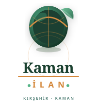
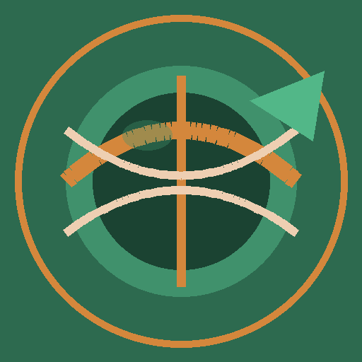

01 — Logotype
Logo Varyasyonları
Açık Zemin · Yatay
Koyu Zemin · Yatay
Krem Zemin · Yatay

Dikey · Navbar Zemin
Dikey · Açık Zemin
Şeffaf Zemin · PNG
02 — Icon & Favicon
Favicon & App İkon Seti
64×64
shortcut
192×192
android/pwa

512×512 pwa splash
Koyu Zeminde Görünüm →
 32px
32px
72px
120px
03 — Dosyalar
Teslim Edilen Dosyalar
logo-horizontal.svg
Yatay logo · Açık zemin · Vektör
logo-horizontal-dark.svg
Yatay logo · Koyu/navbar zemin
logo-vertical.svg
Dikey/stack logo · Her zemin
logo-icon.svg
Sadece ikon · Vektör · Her boyut
favicon.svg
SVG favicon · Modern tarayıcı
favicon.ico
ICO · 16/32/48px multi-size
apple-touch-icon.png
180×180px · iOS Safari
logo-icon-192.png
192×192px · Android/PWA
logo-icon-512.png
512×512px · PWA splash screen
logo-icon-transparent.png
512px · Şeffaf arka plan
og-image.png
1200×630px · Social media OG
04 — Entegrasyon
Next.js / HTML Head Kodları
<!-- ── Favicon & App Icons ────────────────────── -->
<link rel="icon" href="/favicon.svg" type="image/svg+xml" />
<link rel="icon" href="/favicon.ico" sizes="any" />
<link rel="apple-touch-icon" href="/apple-touch-icon.png" />
<!-- ── PWA Manifest ────────────────────────────── -->
<link rel="manifest" href="/site.webmanifest" />
<meta name="theme-color" content="#2D6A4F" />
<!-- ── Open Graph ──────────────────────────────── -->
<meta property="og:image" content="/og-image.png" />
<meta property="og:image:width" content="1200" />
<meta property="og:image:height" content="630" />// ── site.webmanifest ────────────────────────────
{
"name": "KamanİLAN",
"short_name": "KamanİLAN",
"description": "Kırşehir Kaman İlçesi Yerel İlan Platformu",
"theme_color": "#2D6A4F",
"background_color": "#1B4332",
"display": "standalone",
"icons": [
{ "src": "/logo-icon-192.png", "sizes": "192x192", "type": "image/png" },
{ "src": "/logo-icon-512.png", "sizes": "512x512", "type": "image/png" },
{ "src": "/favicon.svg", "sizes": "any", "type": "image/svg+xml" }
]
}05 — Kurallar
Logo Kullanım Kılavuzu
| Durum | Kullanılacak Dosya | Zemin | Durum |
|---|---|---|---|
| Navbar (web) | logo-horizontal-dark.svg | Koyu Yeşil #2D6A4F | ✓ Önerilen |
| Sayfa içi header | logo-horizontal.svg | Açık / Krem | ✓ Önerilen |
| Footer | logo-icon.svg + wordmark | Koyu #1B4332 | ✓ Önerilen |
| Sosyal medya profil | logo-icon-512.png | Yeşil daire | ✓ Önerilen |
| Mobil home screen | apple-touch-icon.png | – | ✓ Önerilen |
| Dar alan (<80px) | favicon.svg / logo-icon | Herhangi | Sadece ikon |